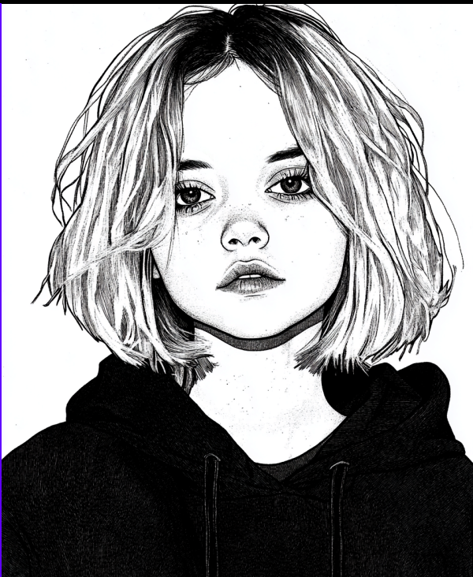

FİZİKSEL ÖZELLİKLER
Boy: 164 cm.
Kilo: 70 kg.
Yaş: 21
Gözler: Mavi (Çoğunlukla farklı renklerde lens kullanır)
Saç: Açık Kahverengi (Sarıya yakın) - Beyaza boyalı
Ten Rengi: Soluk Beyaz
Ses: İnce Feminen - Tatlı sayılabilecek bir ton
Dini İnanç: Deist
Karakteristik Özellikler: Meraklı, Enerjik, Korkak, Şehvetli, Yaratıcı, Duygusal, Hayalperest, Asabi

HOBİLER
YENİ
Manga okumak
Fotoğraf çekmek
Çizim yapmak
Yürüyüşe çıkmak
Müzik dinlemek
Felsefi düşünmek
Kitap okumak
ESKİ
Wattpad Yazarlığı (Bad Boy x Masum Kız Aşk Hikayeleri - 47 tane yazdı)
Twilight bütün serisini tekrar tekrar izlemek (Şu ana kadar 478 kere izledi)
Souls-like oyun oynamak
Lens kolleksiyonu yapmak
Çizim Yapmak
Kıyafet kombini yapmak ve arkadaşlarıyla paylaşmak
Dans etmek (Kendi başına)
Müzik Dinlemek (Genellikle Pop, özellikle Aleyna Tilki)
FOBİLER
YENİ
Boğulmak
Baştan aşağı ıslanmak
Eklem bacaklı ufak canlılar
Birilerinin önünde çıplak kalmak
Sevdiklerine zarar vermek
İftiraya uğramak
Haksız yere suçlanmak
Kaybolmak
Cinsel temas (Nesneler hariç)
ESKİ
Kapalı bir alanda yalnız kalmak
Sevdiklerine zarar vermek (Herhangi bir şekilde)
Cinsel temas (Objeler Hariç)
Eklem bacaklı ufak canlılar
Nefessiz kalmak
Topluluğun önünde çıplak kalmak
Baştan aşağı bir anda ıslanmak
SEVDİKLERİ
YENİ
Kediler
Kitaplar
Fantastik Karakterler
Dürüst İnsanlar
Vefakâr İnsanlar
Gün Batımı
Sessizlik
Cosplayerlar
ESKİ
Kediler
Bilgisayar Oyunları
Twilight Başrol Vampir Adam
Dürüst İnsanlar
Cosplayerlar
Dürüst İnsanlar
SEVMEDİKLERİ
YENİ
Yalan
Eklem Bacaklılar
Yüksek Gürültü
Aptal Hareketler
Mantıksızlık
Bir şeye zorlanmak
Emrivaki
Sigara
ESKİ
Yalan
Eklem Bacaklılar
Rap Müzik
Sarkıntı tipler
Araba bağırtan kekolar
SORUMLULUKLAR
Üniversiteye gitmek (Pazartesi - Salı - Çarşamba - Perşembe Ders Günleri)
Psikoterapi (Pazar ve Perşembe Günleri Akşam 19.00'da)
Vurma adamlık (Ne zaman iş gelirse)
BECERİLER
Keskin Nişancılık: Küçük yaştan beri babasının yönlendirmesiyle keskin nişancı tüfeği kullanımı konusunda ustalaşmıştır. Şu an Barrett M82 Keskin Nişancı Tüfeği Kullanmaktadır.
Çift Tabanca Kullanımı: Keskin nişancı becerisi ile ilgili aldığı eğitimlerde tabanca kullanımı konusunda da beceri kazanmıştır. Şu an Çift Baretta 92 kullanmaktadır.
Akrobasi: Esnek hareketler yapabilir. Yoga, jimnastik vb. etkinliklerden kaynaklı esnek ve çevik hareketler yapabilir.
Çizim: Güzel sanatlara olan yatkınlığı ve ilgisi sebebiyle çizim becerisi oldukça gelişmiştir.